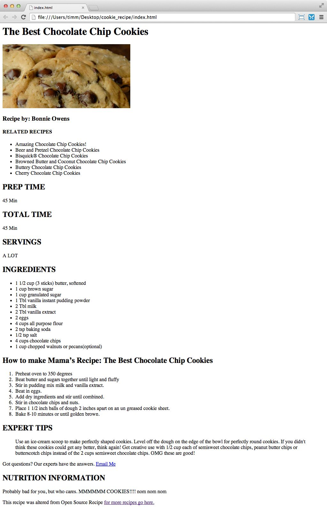

First day of class and there's already homework! I tell ya.
For your first homework assignment, you'll be using HTML elements to markup a recipe. The important lesson to learn here is that there is value in taking the time to choose the most appropriate HTML element for each type of content. This is called creating semantic markup.
"The Manual" for doing front end development is MDN. MDN is an abbreviation for the Mozilla Developer Network. You'll here me say MDN a lot. Bookmark it, love it, reference it often.
They have a page that lists out all the tags: https://developer.mozilla.org/en-US/docs/Web/HTML/Element.
Without further ado, here's the assigment:
Due:
Wednesday, 9/30 @ 6:30pm
Given:
- You are given a text file with unmarked-up content, and one image (download them below these instructions on this page)
- Also given is a screenshot of what the final solution should look like
- In class, on the board, we walked through the ideal elements to use–check your notes!
Assignment:
You task, is to select the correct tags to markup each section of content. Subheaders are a bit subjective though, just make sure you get the <h1> correct.
Tips on how to structure your folders/files:
Since this is the first homework, I want to get everyone on the right path to naming their files consistently and organizing their code cleanly into folders.
- Each homework assignment should be in a new folder within your "fewd-36" folder. For example, create a "cookie-recipe" folder for this assignment.
- Case sensitivity is important! Always use lowercase letters and separate words with a hyphen. This goes for folders and HTML files.
- For this assignment, your folder/file structure should look like this:
fewd-36/ fewd-36/cookie-recipe/ fewd-36/cookie-recipe/cookie-recipe.html fewd-36/cookie-recipe/cookies.jpg
Notes:
This homework assignment has no CSS, so the page is considered “unstyled”. It just uses the “user agent stylesheet” for styles. Bonus: In class next time, It'd be great if someone (maybe even you!) could explain to me how the user agent stylesheet is affecting your page.
References:
I would suggest bookmarking this page as a handy reference guide to all of the elements in the HTML language: https://developer.mozilla.org/en-US/docs/Web/HTML/Element.
Materials
-
Mockup: what the page should look like.
Build the HTML from this visual mockup.
 -
Image: the recipe image to link to at the top of the page.

-
Text: all of the text of the recipe. This ain't no typing class.
cookie-recipe.txt
{kind=link}